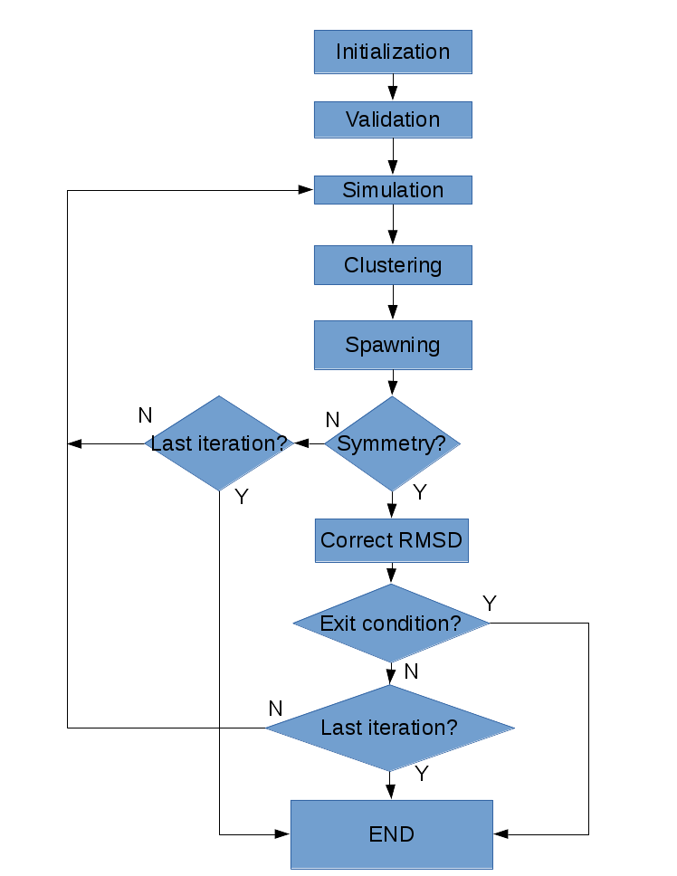

AdaptivePELE Overview¶
This page will try to give you an overview of the program, enough to get you up and running. Adaptive sampling is called with a control file as a parameters. The control file is a json document that contains 4 sections: general parameters, simulation parameters, clustering parameters and spawning parameters. The first block refers to general parameters of the adaptive run, while the other three blocks configure the three steps of an adaptive sampling run, first run a propagation algorithm (simulation), then cluster the trajectories obtained (clustering) and finally select the best point to start the next iteration (spawning). This structure can be summarized in the flow diagram shown below:
general Params¶
The general parameters block has five mandatory fields:
- restart: boolean (true or false) This parameter specifies wether you want to continue a previous simulation or not
- debug: boolean Run adaptive in debug mode, without calling any propagation algorithm
- outputPath: string The path where the results of the simulation will be written
- initialStructures: list The path(s) to the intial structure(s)
- writeAllClusteringStructures: boolean Wether to write all the structures of the clusters
Additionaly, it can also have a nativeStructure parameter, a string containing the path to the native structure. This structure will only be used to correct the RMSD in case of symmetries. The symmetries will also have to be specified (see clustering Params).
simulation Params¶
Currently there are two implemented simulation types, PELE and test. The test type has no real use outside of testing. In futures version we plan to implement an MD type.
In the PELE type the following parameters are mandatory:
- iterations: integer Number of adaptive sampling iterations to run
- processors: integer Number of processors to use with PELE
- peleSteps: integer Number of PELE steps in a iteration
- seed: integer Seed for the random number generator
- controlFile: string Path to the PELE control file templetized for use with adaptive
Optionally, you can also use the following parameters:
- data: string Path to the Data folder needed for PELE, it is already included and should not be modified an specific version of PELE has to be used
- documents: string Path to the Documents folder needed for PELE, it is already included and should not be modified an specific version of PELE has to be used
- executable: string Path to the Pele executable folder, it is already included and should not be modified an specific version of PELE has to be used
- exitCondition: dict Block which specifies an exit condition for adaptive sampling. Currently only the metric type is implemented, this type accepts a metricCol which represents a column in the report file and a exitValue which represents a value. The simulation will terminate after the metric written in the metricCol reaches a value smaller than exitValue
An example of the exit condition block that would terminate the program after a trajectory reaches a value of less than 2 for the fourth column of the report file would look like:

clustering Params¶
Currently there are two functional types of clustering, Contacts Clustering and ContactMap Accumulative Clustering. Both follow the same strategy, they cluster the trajectories generated at the end of every trajectory with the previous trajectory.
The Contacts Clustering does that by RMSD, that is, if the RMSD between two conformations is less than a certain threshold, the conformation is added to the cluster. The thresholds are usually assigned as a function of the ratio between the number of contacts of the ligand and the number of heavy atoms of the ligand. An atom of the ligand is considered to be in contact with an atom of the protein if the distance between them is less than a certain threshold. Two functions for the threshold calculator are implemented, constant which gives a constant value to all clusters and heaviside which creates a step function with steps at the points specified (See next image for an example of use).
The ContactMap Accumulative Clustering does the same except that instead of the RMSD it uses the similarity between the contact maps of the two conformations. The contactMap is a boolean matrix with the protein atoms (or a subset of them) as columns and the ligand atoms (usually only the heavy atoms) as rows. The entries are only true if the specific ligand and receptor atoms are close enough (less than a contactTreshold). Currently there are three methods implemented to evaluate the similarity of contactMaps, Jaccard which calulates the Jaccard Index (Wikipedia page), correlation, which calculates the correlation between the two matrices and distance, which evaluates the similarity of two contactMaps by calculating the ratio of the number of differences over the average of elements in the contacts maps.
The following parameters are mandatory for the clustering block:
- ligandResname: string Residue name of the ligand in the PDB
- contactThresholdDistance: float Minimum distance at which two atoms have to be separated to be considered in contact
Optionally, the following parameters can be specified:
- symmetries: list List of groups of key:value maps with the names of atoms that are symmetrical in the ligand
- similarityEvaluator: string Name of the method to evaluate the similarity of contactMaps, only available for ContactMap Accumulative Clustering
A typical setting of the thresholdCalculator for the contacts clustering might look like:

In this exemple, clusters having a contacts ration greater than 1 have a treshold of 2, those with contacts ratio between 1 and 0.75 have a treshold of 3, between 0.75 and 0.5 a threshold of 4 and the rest have a threshold size of 5. This means that for greater contacts ratio, typically closer to the binding site, the cluster size will be smaller and therefore those regions will be more finely discretized.
spawning Params¶
Finally, Adaptive Sampling distributes the number of processors available over the clusters obtained. This process is called spawning. There are several strategies for this process, currently four are implemented:
- sameWeight: Distributes the processors uniformly over all clusters
- inverselyProportional: Distributes the processors with a weight that is inversely proportional to the cluster population
- epsilon: Does the same that inverselyProportional, except for a fraction of the processors, that are distributed according to the value of a certain metric
- variableEpsilon: Does the same that epsilon, except that the fraction of processors changes over time
The first two method take no parameters, the last two accept the following parameters:
- reportFilename: string Name of the files that contain the metrics of the trajectories
- metricColumnInReport: integer Column of the report file that contains the metric of interest (zero indexed)
- epsilon: float The fraction of the processors that will be assigned according to the metric selected
- metricWeights: string Selects how to distribute the weights of the cluster according to its metric, two options: linear(default) or Boltzmann weigths
- T: float Temperature, only used for Boltzmann weights
The following parameters are mandatory for variableEpsilon:
- varEpsilonType: string Select the type of variation for the epsilon value. At the moment only a linear variation is implemented
- maxEpsilon: float Maximum value for epsilon
- minEpsilon: float Minimum value for epsilon
- variationWindow: integer Last iteration over which to change the epsilon value
- maxEpsilonWindow: integer Number of iteration with epsilon=maxEpsilon
- period: integer Perio of the variation (in number of iterations)
Similarly than with the cluster threshold, a density for each cluster can be assigned as a function of the contacts ratio. There are two types of density calculators, null and heaviside. The first assigns a constant density of 1 to all cluster (it is the default option), meanwhile, the second assigns different densities using a heaviside function, much like the thresholdCalculator.
To summarize, below there is a screenshot of a simple functional control file:

A more complete (altough not comprehensible) example would look like (clicking in the image will show a larger version of the image):